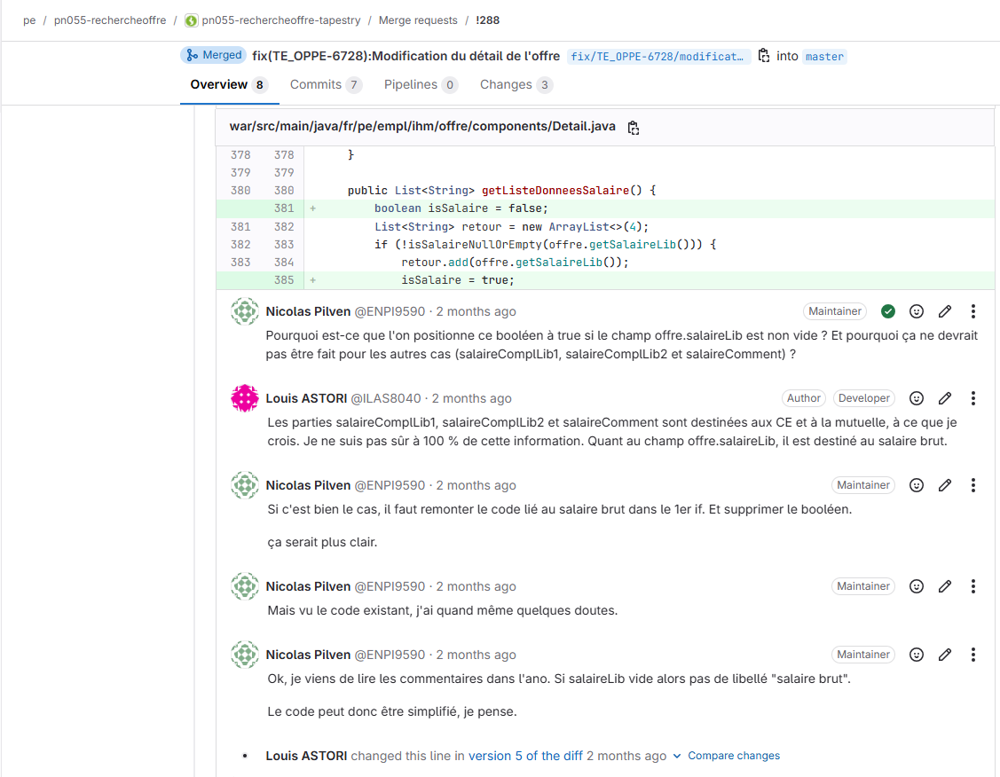
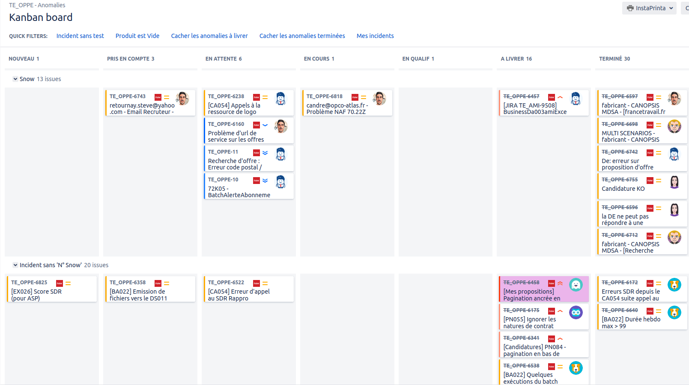
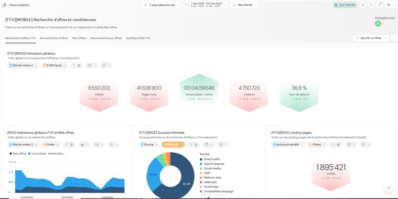
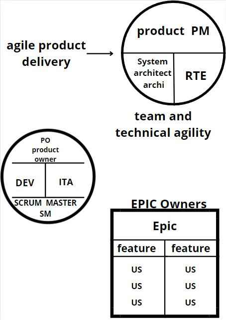
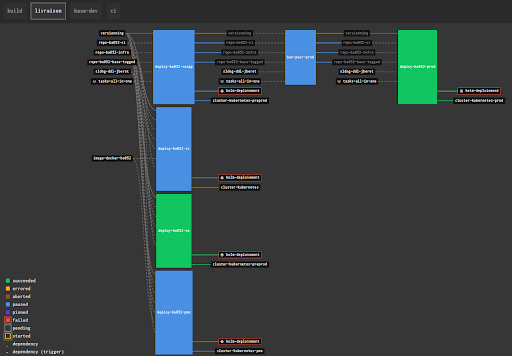
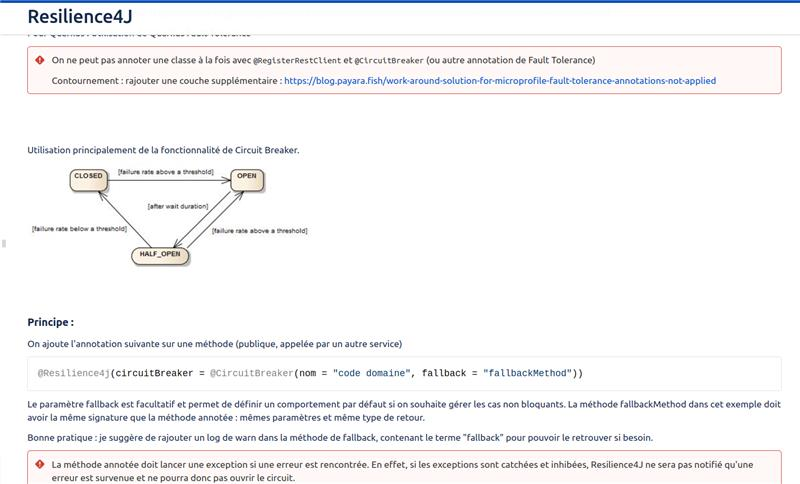

Rentree 2026
2026 - 2027
Bachelor sciences informatiques et numeriques
Ecole Superieure d'Ingenieurs Leonard de Vinci
Parcours vise pour poursuivre en alternance apres le BTS.
Louis Astori
Issu d'un BTS SIO SLAM, je poursuis mon parcours avec la meme logique : apprendre vite, travailler proprement et contribuer a des solutions utiles. Mes experiences chez France Travail m'ont permis d'intervenir sur Angular, Java et Tapestry dans un cadre produit exigeant.
Focus 2026
Formation
BTS SIO SLAM obtenu, poursuite en Bachelor sciences informatiques et numeriques puis en Mastere developpement Full Stack.
Experience
Deux passages a France Travail sur des sujets web, produit et authentification.
Objectif
Trouver une alternance pour la rentree 2026 et continuer a progresser sur des applications utiles, propres et fiables.
Mon parcours combine developpement, culture produit et discipline sportive. J'aime les environnements ou l'on mesure ce qui est fait, ou l'on s'ameliore en continu et ou l'on garde une logique claire entre besoin, implementation et livraison.
Je recherche une alternance en developpement pour la rentree 2026, avec un rythme de deux semaines en entreprise pour deux semaines en ecole. Mon objectif est d'apporter un soutien concret sur le developpement, la correction de bugs et l'amelioration continue des projets.
Discipline, endurance et progression mesurable que je transpose dans ma maniere de travailler.
User stories, tickets, instrumentation et qualite logicielle pour livrer de maniere plus fiable.
Ecole Superieure d'Ingenieurs Leonard de Vinci
Parcours vise pour poursuivre en alternance apres le BTS.
Ecole Sup de Vinci
Continuation prevue du parcours apres le bachelor.
Lycee Gustave Eiffel
Solutions logicielles et applications metiers.
Lycee Alfred Kastler
Reseaux informatiques et systemes communicants.
Les briques techniques et methodologiques que je veux rendre lisibles rapidement, sans perdre la profondeur des preuves BTS.
Equipe Opportunite des offres
Developpement Angular et Tapestry sur la recherche d'offres, dans un environnement produit structure.
Equipe Authentification
Developpement Angular et Java avec batchs sur les sujets d'authentification et de livraison technique.
Stagiaire reseaux
Installation de fibres optiques et interventions liees aux reseaux.
Stagiaire IT
Installation de switch, routeur, Wi-Fi et tablettes Android dans un centre de formation.
Stagiaire infrastructure
Brassage reseau des agences et depannage des postes informatiques.
Stagiaire infrastructure
Remasterisation de postes informatiques et preparation du materiel.
Je montre ici des exemples concrets de travail, avec des situations, des outils et des methodes que j'ai vraiment utilises.

Branche, Merge Request, relecture et historique propre pour securiser l'integration des changements.

Ticketing, Kanban, affectation, correction puis validation : un cycle clair pour traiter les anomalies.

Comprendre comment les donnees d'usage remontent et comment elles servent a piloter l'amelioration produit.

Decouverte d'un fonctionnement Agile a grande echelle avec decoupage en features, user stories et sprints.

Lecture d'un pipeline Concourse pour comprendre la chaine de validation et de deploiement d'un batch.

Flash sujets, partage d'outils et veille documentaire pour faire progresser la pratique au-dela des tickets du quotidien.
Mon CV
Cette version reprend mon CV le plus recent avec mon objectif d'alternance, mon parcours de formation, mes experiences en entreprise et mes competences techniques.
Recherche d'alternance pour la rentree 2026.
Rythme annonce : deux semaines en entreprise pour deux semaines en ecole.
Bordeaux, Perigueux, Strasbourg, permis B et A2, avec version PDF complete.
Les depots GitHub restent affiches dynamiquement pour garder le portfolio vivant, pendant que le reste du site montre le contexte et les preuves.
Je garde ici un apercu rapide de mon volume, de ma recup et de mes dernieres seances. Le detail complet s'ouvre dans un onglet dedie avec sommeil, activites, charges et historique.
Chargement Garmin...
Les indicateurs sportifs seront affiches ici.
Dernieres seances
Le detail complet est disponible dans l'onglet sport.
Chargement...